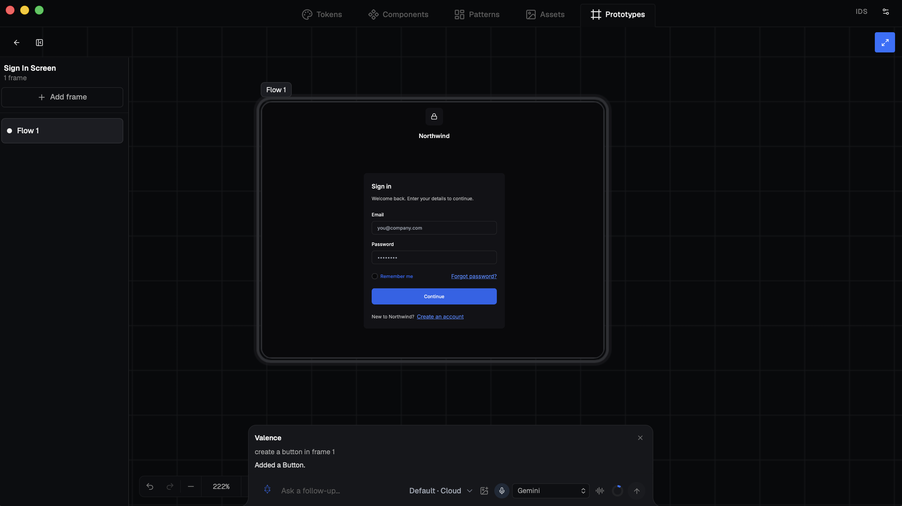
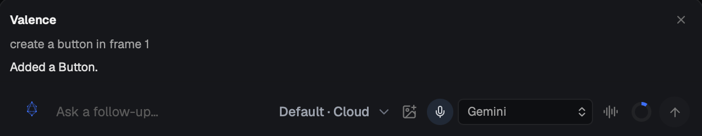
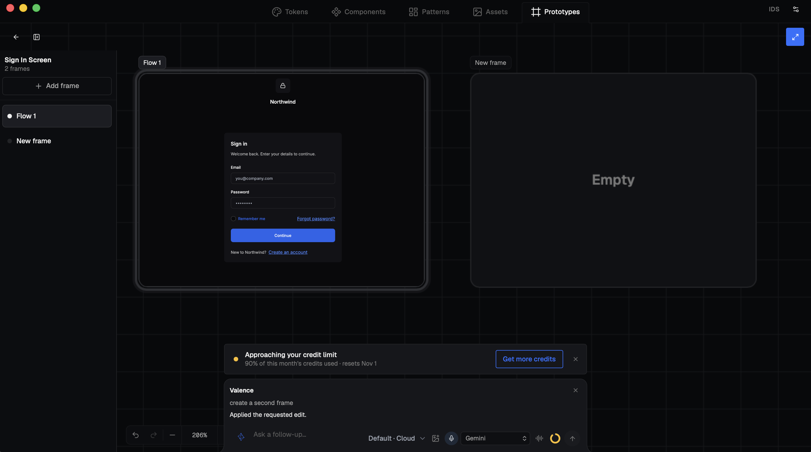
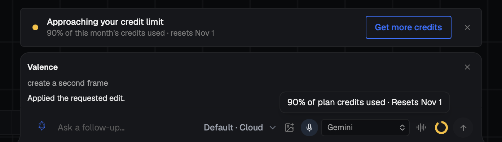
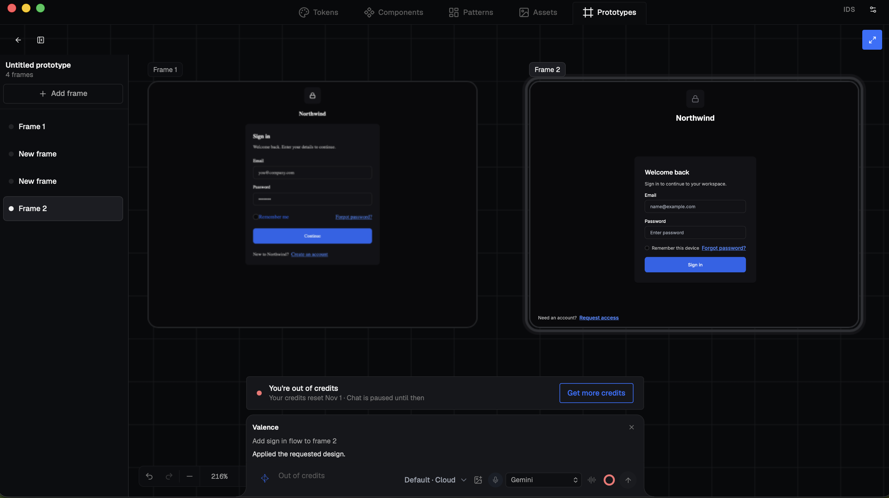
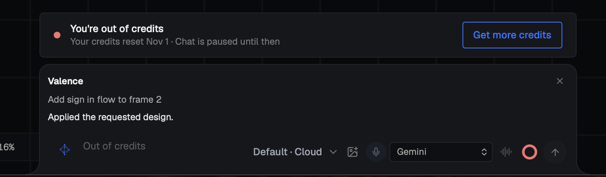
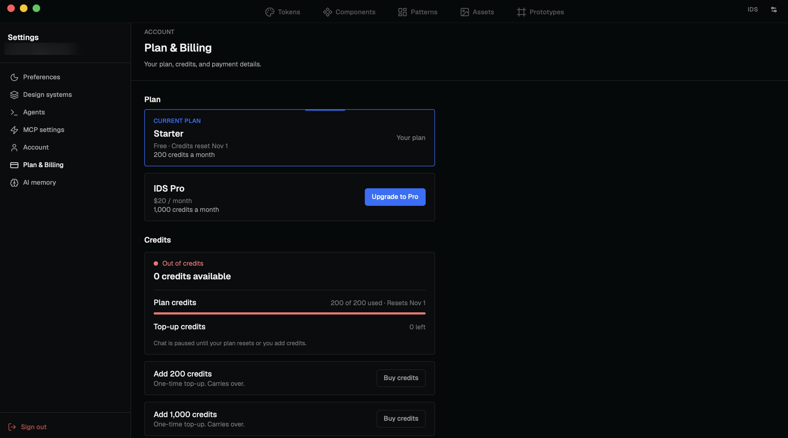

SaaS · Product Design · AI
IDS is a design system editor from Ionic Studio. Designers build tokens, components and prototypes in it, and work with an AI assistant called Valence in a chat bar.
IDS had no way to tell you when your credits were running out, or what to do about it. I was brought in to design that experience from scratch: how usage shows up, what happens at the limit, how people upgrade, and how they know it worked.
The main interaction in IDS happens in the chat, so that's where the experience lives: the warnings, the limit, and the way to get more.

01 · Warn
A small ring in the chat bar shows credits at a glance. At 90%, an amber notification appears with a direct link to get more credits. At the limit, a blocking notification disables the chat box and prompts you to either upgrade, buy more credits, or wait until your limit resets.
Normal usage

Ring 10% filled.
90% used


An amber notice sits right above the prompt, with a way to get more credits.
Out of credits


The notice stays in the same place, so nothing jumps around, and the prompt box is replaced by a clear explanation.
02 · Choose
From the notification, users land on Plan & Billing and choose how to continue. They can upgrade the plan for a monthly allowance, or top up credits once without subscribing. Both plans are always visible with the current one marked, so it reads as a comparison, not a leap.
A "Back to" button returns them to the work they left, so settings feels like a detour and not a destination.
From the amber warning, to running out, to Plan & Billing in one click.

Plan & Billing: plans, credits, and top-ups on one page.
03 · Confirm
After checkout, people need proof it worked. Credits count up to the new total and a "+N credits added" chip confirms the amount. Upgrading to Pro adds a check and a shimmer to the plan card. All of it respects reduced-motion settings.
Upgrading to Pro gives the plan card the "Current plan" mark with a check and a shimmer, and the monthly allowance lands in the balance.
The "Current plan" mark moves from Starter to IDS Pro, with a check and a shimmer.
The balance counts up to the new total, with a "+1,000 credits added" chip.
Upgrade to Pro. From the plan card, through checkout (sped up), to the confirmation.
A top-up is a one-time purchase for people who don't want a subscription. The balance counts up from zero and a chip confirms the amount.
The balance counts up, with a "+200 credits added" chip.
Top up credits. From the credits row, through checkout (sped up), to the confirmation.
Full flow
The payment flow is simulated for the prototype. The checkout runs in a sandbox, and personal details in the recordings are blurred.
Outcome
IDS now has a complete credit and billing experience, from the first warning to the confirmation.
I built two versions of the flow: one with settings as a modal, and one with settings as a page. After reviewing both, the team chose the page. They are still finishing the app, and a beta is planned for the end of the year.